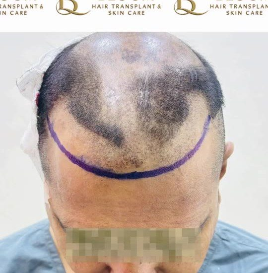
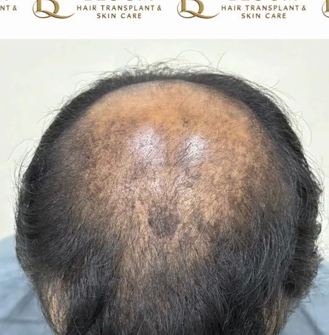
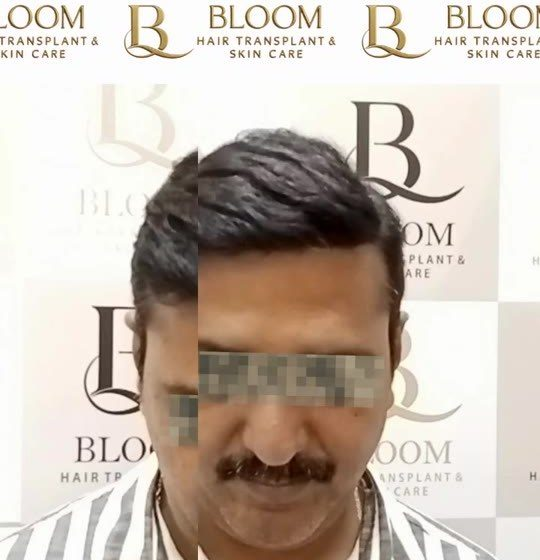

Take the 60-second hair assessment. Get a personal plan from Dr. Vinod Sonawane’s team, plus a free guide to transplant types, candidacy and cost.
Our team calls you during clinic hours (Mon–Sat, 10 AM–8 PM).



Tap the closest match. We will take you to your assessment.


Tap a type to see how it works, who it suits and what to expect.

Individual follicles are taken one by one from the donor area (back and sides of the head) with a micro-punch and placed into the thinning area.
How it works
Follicles are extracted as in FUE, then placed with a pen-like implanter that sets the depth and direction in a single step.
How it works
A thin strip of scalp is removed from the donor area and divided into grafts under magnification, then implanted into the recipient area.
How it works
Follicles are placed into patchy beard or moustache areas at the right angle and direction so facial hair looks natural.
How it worksFine grafts are placed one by one at a low angle to recreate the shape, density and direction of the eyebrow.
How it worksPlanned to keep natural hair patterns and add density where thinning shows, often without changing your overall look.
How it works
Corrects an unnatural hairline, low density, visible scars or poorly placed grafts from an earlier procedure.
How it worksFrames from a Bloom patient case. Drag the slider below for more.



 BeforeAfter
BeforeAfterIndividual results. Outcomes vary with hair type, donor supply, age and aftercare. A consultation is needed to know what is realistic for you.
Bloom Hair TransplantHair Transplant
Dr. Sonawane plans every case himself, from hairline design to graft count. He is recognised as an “Iconic Hair Transplant Surgeon” by Mid-Day and is known for natural-looking results and for correcting failed transplants.
Tap to play.


60 seconds, from your phone.
A short call to understand your concern and book a visit.
Dr. Sonawane’s team studies your pattern and donor area, then gives a plan and clear estimate.
Under local anaesthesia, with recovery guidance and follow-ups.
I had done my hair transplant 10 months back and have got amazing natural results. Nobody can guess I have got a hair transplant. I would highly recommend to visit the clinic and speak with Dr Sonawane.
Deepak ChandramohanGoogle reviewThe consultation provided by the Doctor was genuine and realistic. Doctor and their experienced technician took good care during the surgery. Now I am satisfied with my result.
Rajan PillaiGoogle reviewFrom the start, the consultation, to the hair transplant procedure I was very comfortable and satisfied. I will definitely recommend Dr Vinod Sonawane to all my family and friends.
Ajit PalGoogle reviewGround Floor, Panchavati, Versova Marg, opp. Apna Bazar Road, next to D.N. Nagar Metro Station, Andheri West, Mumbai 400058
🕘 Mon–Sat, 10:00 AM – 8:00 PM
1st Floor, Nand Ashish, 102, R.B. Mehta Marg, above Natural Ice Cream, Ghatkopar East, Mumbai 400077
🕘 Mon–Sat, 10:00 AM – 8:00 PM
It usually ranges from about ₹30,000 to ₹1,50,000 or more, depending on the number of grafts, the technique and the surgeon. After assessing your scalp, we give you a personalised estimate.
It is done under local anaesthesia. You may feel mild discomfort during the injection, and some swelling or tenderness for a few days.
Transplanted follicles come from the donor area, which resists hair loss, so they keep growing. Existing non-transplanted hair may still thin over time.
Shedding at 2–3 weeks, new growth from 3–4 months, noticeable improvement at 6 months and the full result at 9–12 months.
Usually people with stable pattern hair loss, a healthy donor area and good general health, generally above 21. Only an assessment can confirm suitability.
Often, yes. Repair can include redesigning the hairline, redistributing grafts and adding density, depending on your donor reserve and scarring.
Start the 60-second assessment, or talk to us right now.
Take the 60-second assessment and download the Mumbai Hair Transplant Guide.
Start now